# Data libraries
import pandas as pd
import missingno as msno
from tabulate import tabulate
# ML libraries
import statistics
import random
import numpy as np
from numpy import argmax
import scipy.stats as stats
from statsmodels.tsa.stattools import adfuller
from statsmodels.tsa.stattools import kpss
from arch.unitroot import PhillipsPerron
from arch.unitroot import ZivotAndrews
from arch.unitroot import DFGLS
from statsmodels.tsa.stattools import pacf, acf
from statsmodels.tsa.arima.model import ARIMA
from statsmodels.stats.diagnostic import lilliefors
from statsmodels.stats.stattools import durbin_watson
from statsmodels.stats.diagnostic import acorr_ljungbox
from statsmodels.sandbox.stats.runs import runstest_1samp
from statsmodels.tsa.seasonal import seasonal_decompose
import xgboost as xgb
# Plotting libraries
import matplotlib.pyplot as plt
import matplotlib.gridspec as gridspec
import seaborn as sns
from statsmodels.graphics.tsaplots import plot_acf, plot_pacf
from statsmodels.graphics.gofplots import qqplot
%matplotlib inlineCRE/MF Mortgage Rate Model Off-ValidMind
Setup
Load Data
df = pd.read_csv("../datasets/lending_club_loan_rates.csv", sep='\t')
df = df.rename(columns={'Unnamed: 0': 'Date'})
df = df.set_index(pd.to_datetime(df['Date']))
df.drop(["Date"], axis=1, inplace=True)
df.head()| loan_rate_A | loan_rate_B | loan_rate_C | loan_rate_D | FEDFUNDS | diff1_loan_rate_A | diff1_loan_rate_B | diff1_loan_rate_C | diff1_loan_rate_D | diff1_FEDFUNDS | diff2_FEDFUNDS | |
|---|---|---|---|---|---|---|---|---|---|---|---|
| Date | |||||||||||
| 2007-08-01 | 7.766667 | 9.497692 | 10.947500 | 12.267000 | 5.02 | 0.060000 | 0.134359 | 0.207500 | -0.467444 | -0.24 | -0.25 |
| 2007-09-01 | 7.841429 | 9.276667 | 10.829167 | 12.436667 | 4.94 | 0.074762 | -0.221026 | -0.118333 | 0.169667 | -0.08 | 0.16 |
| 2007-10-01 | 7.830000 | 9.433333 | 10.825926 | 12.737368 | 4.76 | -0.011429 | 0.156667 | -0.003241 | 0.300702 | -0.18 | -0.10 |
| 2007-11-01 | 7.779091 | 9.467778 | 10.967037 | 12.609444 | 4.49 | -0.050909 | 0.034444 | 0.141111 | -0.127924 | -0.27 | -0.09 |
| 2007-12-01 | 7.695833 | 9.387500 | 10.805000 | 12.478889 | 4.24 | -0.083258 | -0.080278 | -0.162037 | -0.130556 | -0.25 | 0.02 |
Visual Inspection
Time Series Plots.
# FEDFUNDS plot
sns.set(rc={"figure.figsize": (15, 5)})
sns.lineplot(data=df["FEDFUNDS"])
plt.title("FEDFUNDS")
plt.xlabel("Date")
plt.ylabel("Rate")
plt.show()
# Loan rates plot
loan_rates = df[["loan_rate_A", "loan_rate_B", "loan_rate_C", "loan_rate_D"]]
sns.set(rc={"figure.figsize": (15, 5)})
sns.lineplot(data=loan_rates)
plt.title("Loan Rates")
plt.xlabel("Date")
plt.ylabel("Rate")
plt.show()
# Diff loan rates plot
diff_loan_rates = df[["diff1_loan_rate_A", "diff1_loan_rate_B", "diff1_loan_rate_C", "diff1_loan_rate_D"]]
sns.set(rc={"figure.figsize": (15, 5)})
sns.lineplot(data=diff_loan_rates)
plt.title("Diff Loan Rates")
plt.xlabel("Date")
plt.ylabel("Rate")
plt.show()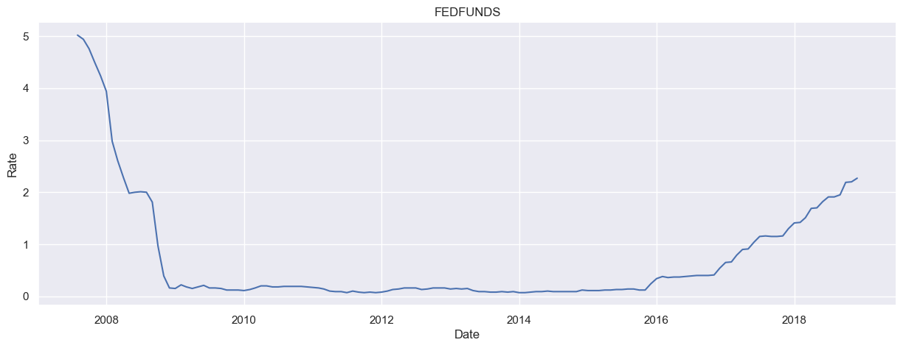
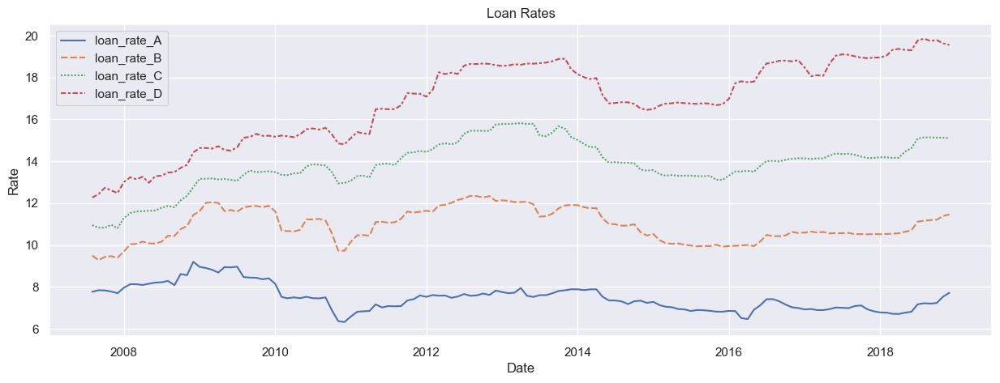
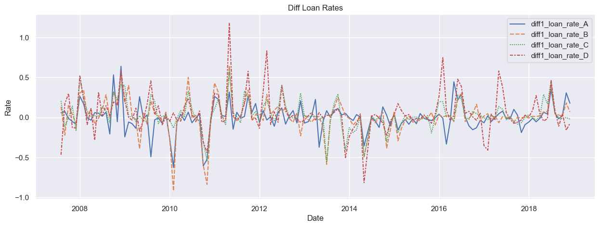
4. Model Development
4.1. Development Data and Platform
4.1.2. Data Quality and Relevance
4.1.3. Data Process, Adjustments and Treatment
## A. Missing Values Analysis
Step 1: Calculate the percentage of missing values in each column
missing_values = df.isnull().sum() / len(df) * 100
missing_values_df = pd.DataFrame({"column_name": missing_values.index, "missing_percentage": missing_values.values})
missing_values_df = missing_values_df.sort_values("missing_percentage", ascending=False)Step 2: Display the missing values percentage in a table format
display(missing_values_df)| column_name | missing_percentage | |
|---|---|---|
| 0 | loan_rate_A | 0.0 |
| 1 | loan_rate_B | 0.0 |
| 2 | loan_rate_C | 0.0 |
| 3 | loan_rate_D | 0.0 |
| 4 | FEDFUNDS | 0.0 |
| 5 | diff1_loan_rate_A | 0.0 |
| 6 | diff1_loan_rate_B | 0.0 |
| 7 | diff1_loan_rate_C | 0.0 |
| 8 | diff1_loan_rate_D | 0.0 |
| 9 | diff1_FEDFUNDS | 0.0 |
| 10 | diff2_FEDFUNDS | 0.0 |
Step 3: Visualize the missing values
Create a bar plot to show the missing values percentage per column.
plt.figure(figsize=(10, 6))
sns.barplot(x="missing_percentage", y="column_name", data=missing_values_df, orient="h")
plt.title("Percentage of Missing Values per Column")
plt.xlabel("Percentage")
plt.ylabel("Column Name")
plt.show()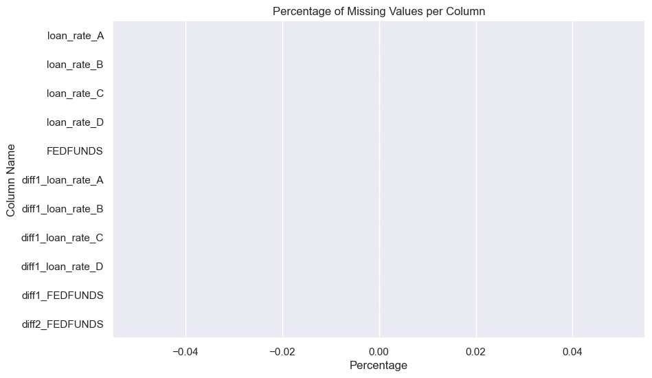
Create a matrix plot to show the pattern of missing values in the dataset.
plt.figure(figsize=(10, 6))
msno.matrix(df)
plt.title("Missing Values Matrix")
plt.show()<Figure size 1000x600 with 0 Axes>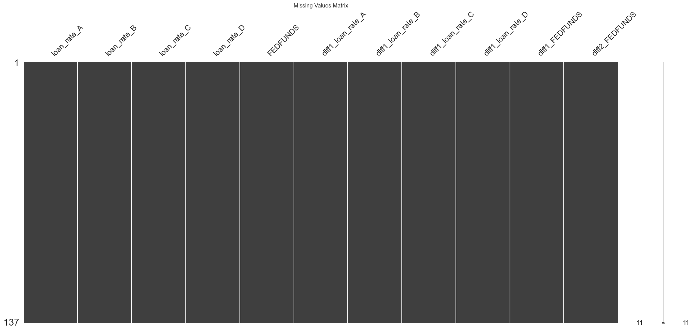
Step 4: Analyze the patterns of missing values
Based on the bar plot and matrix plot, analyze if the missing values are random or if there are specific patterns in the data.
Step 5: Handle missing values
Based on the analysis, decide how to handle the missing values.
## B. Outliers Analysis
Step 1: Visualize the dataset using box plots
Visualize the data using box plots to get an initial sense of the presence of outliers.
# Box plot for loan rates
loan_rates = df[["loan_rate_A", "loan_rate_B", "loan_rate_C", "loan_rate_D"]]
sns.set(rc={"figure.figsize": (10, 5)})
sns.boxplot(data=loan_rates)
plt.title("Box Plots of Loan Rates")
plt.xlabel("Loan Rates")
plt.ylabel("Values")
plt.show()
# Box plot for FEDFUNDS and diff FEDFUNDS
fig, axes = plt.subplots(1, 2, figsize=(10, 5))
sns.boxplot(data=df["FEDFUNDS"], ax=axes[0])
axes[0].set_title("Box Plot of FEDFUNDS")
axes[0].set_xlabel("FEDFUNDS")
axes[0].set_ylabel("Values")
sns.boxplot(data=df["diff1_FEDFUNDS"], ax=axes[1])
axes[1].set_title("Box Plot of Diff FEDFUNDS")
axes[1].set_xlabel("Diff FEDFUNDS")
axes[1].set_ylabel("Values")
plt.tight_layout()
plt.show()
# Box plot for diff loan rates
diff_loan_rates = df[["diff1_loan_rate_A", "diff1_loan_rate_B", "diff1_loan_rate_C", "diff1_loan_rate_D"]]
sns.set(rc={"figure.figsize": (10, 5)})
sns.boxplot(data=diff_loan_rates)
plt.title("Box Plots of Diff Loan Rates")
plt.xlabel("Diff Loan Rates")
plt.ylabel("Values")
plt.show()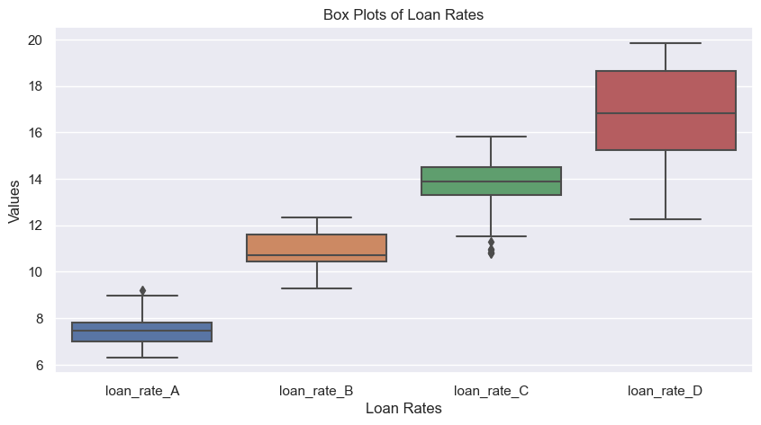
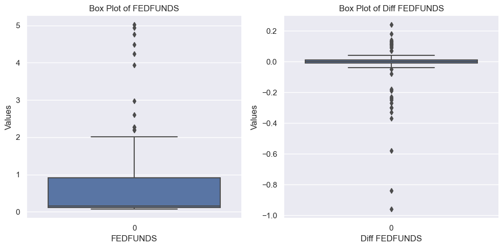
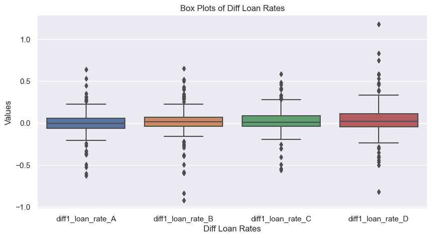
Step 2: Calculate Z-scores
Calculate the Z-scores for each column in your dataset to identify data points that are far from the mean.
z_scores = np.abs(stats.zscore(df))Step 3: Set a threshold and identify outliers
Set a threshold (e.g., 3) to identify data points with Z-scores higher than the threshold.
threshold = 3
outliers = np.where(z_scores > threshold)
outliers_df = pd.DataFrame({"row": outliers[0], "column": outliers[1]})Step 4: Analyze the outliers
Analyze the outliers by looking at their frequency, index, and corresponding column.
outliers_count = outliers_df.groupby(["row", "column"]).size().reset_index(name="count")
outliers_info = outliers_count.merge(outliers_df, on=["row", "column"], how="left")
# Add the column names and dates to the outliers_info DataFrame
outliers_info["column_name"] = outliers_info["column"].apply(lambda x: df.columns[x])
outliers_info["date"] = outliers_info["row"].apply(lambda x: df.index[x])
# Reorder, sort by column_name, and display the DataFrame
outliers_info = outliers_info[["date", "column_name", "count"]].sort_values(by="column_name")
display(outliers_info)| date | column_name | count | |
|---|---|---|---|
| 0 | 2007-08-01 | FEDFUNDS | 1 |
| 1 | 2007-09-01 | FEDFUNDS | 1 |
| 2 | 2007-10-01 | FEDFUNDS | 1 |
| 3 | 2007-11-01 | FEDFUNDS | 1 |
| 4 | 2007-12-01 | FEDFUNDS | 1 |
| 5 | 2008-01-01 | FEDFUNDS | 1 |
| 10 | 2008-10-01 | diff1_FEDFUNDS | 1 |
| 12 | 2008-11-01 | diff1_FEDFUNDS | 1 |
| 6 | 2008-02-01 | diff1_FEDFUNDS | 1 |
| 16 | 2010-10-01 | diff1_loan_rate_A | 1 |
| 9 | 2008-10-01 | diff1_loan_rate_A | 1 |
| 13 | 2008-12-01 | diff1_loan_rate_A | 1 |
| 14 | 2010-02-01 | diff1_loan_rate_A | 1 |
| 17 | 2010-11-01 | diff1_loan_rate_A | 1 |
| 15 | 2010-02-01 | diff1_loan_rate_B | 1 |
| 18 | 2010-11-01 | diff1_loan_rate_B | 1 |
| 20 | 2011-05-01 | diff1_loan_rate_B | 1 |
| 24 | 2013-07-01 | diff1_loan_rate_C | 1 |
| 19 | 2010-11-01 | diff1_loan_rate_C | 1 |
| 21 | 2011-05-01 | diff1_loan_rate_C | 1 |
| 23 | 2012-03-01 | diff1_loan_rate_D | 1 |
| 22 | 2011-05-01 | diff1_loan_rate_D | 1 |
| 25 | 2014-05-01 | diff1_loan_rate_D | 1 |
| 11 | 2008-10-01 | diff2_FEDFUNDS | 1 |
| 7 | 2008-02-01 | diff2_FEDFUNDS | 1 |
| 8 | 2008-03-01 | diff2_FEDFUNDS | 1 |
# Time series plot for loan rates with outliers marked
loan_rates = df[["loan_rate_A", "loan_rate_B", "loan_rate_C", "loan_rate_D"]]
loan_rates_outliers = outliers_info[outliers_info["column_name"].str.contains("loan_rate")]
fig, ax = plt.subplots(figsize=(10, 5))
loan_rates.plot(ax=ax)
loan_rates_outliers.apply(lambda x: ax.annotate('Outlier', xy=(x.date, df.loc[x.date][x.column_name]),
fontsize=8, color='red', rotation=45), axis=1)
plt.title("Time Series of Loan Rates with Outliers Marked")
plt.xlabel("Date")
plt.ylabel("Values")
plt.show()
# Time series plot for FEDFUNDS with outliers marked
fed_funds_outliers = outliers_info[outliers_info["column_name"] == "FEDFUNDS"]
fig, ax = plt.subplots(figsize=(10, 5))
df["FEDFUNDS"].plot(ax=ax)
fed_funds_outliers.apply(lambda x: ax.annotate('Outlier', xy=(x.date, df.loc[x.date]["FEDFUNDS"]),
fontsize=8, color='red', rotation=45), axis=1)
plt.title("Time Series of FEDFUNDS with Outliers Marked")
plt.xlabel("Date")
plt.ylabel("Values")
plt.show()
# Time series plot for diff loan rates with outliers marked
diff_loan_rates = df[["diff1_loan_rate_A", "diff1_loan_rate_B", "diff1_loan_rate_C", "diff1_loan_rate_D"]]
diff_loan_rates_outliers = outliers_info[outliers_info["column_name"].str.contains("diff1_loan_rate")]
fig, ax = plt.subplots(figsize=(10, 5))
diff_loan_rates.plot(ax=ax)
diff_loan_rates_outliers.apply(lambda x: ax.annotate('Outlier', xy=(x.date, df.loc[x.date][x.column_name]),
fontsize=8, color='red', rotation=45), axis=1)
plt.title("Time Series of Diff Loan Rates with Outliers Marked")
plt.xlabel("Date")
plt.ylabel("Values")
plt.show()
# Time series plot for diff FEDFUNDS with outliers marked
diff_fed_funds_outliers = outliers_info[outliers_info["column_name"] == "diff1_FEDFUNDS"]
fig, ax = plt.subplots(figsize=(10, 5))
df["diff1_FEDFUNDS"].plot(ax=ax)
diff_fed_funds_outliers.apply(lambda x: ax.annotate('Outlier', xy=(x.date, df.loc[x.date]["diff1_FEDFUNDS"]),
fontsize=8, color='red', rotation=45), axis=1)
plt.title("Time Series of Diff FEDFUNDS with Outliers Marked")
plt.xlabel("Date")
plt.ylabel("Values")
plt.show()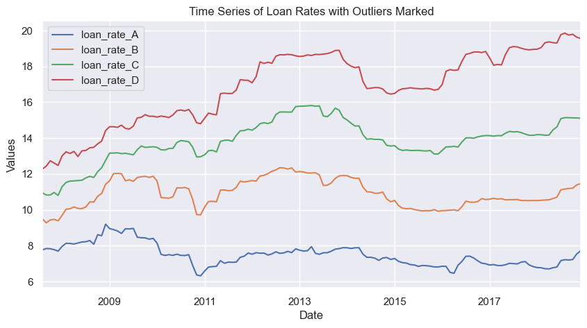
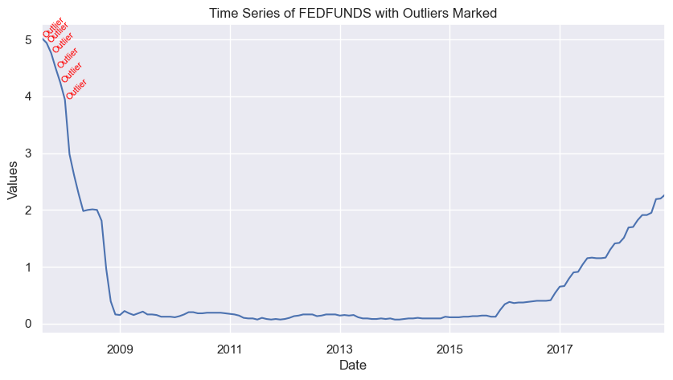
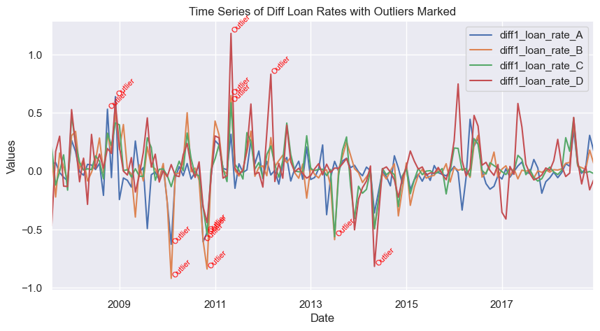
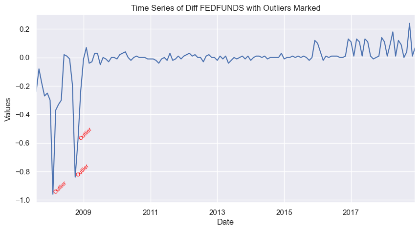
C. Seasonality Analysis
Step 1: Seasonal decomposition
Perform seasonal decomposition on each time series.
freq = 12 # Assuming monthly data, adjust the frequency accordingly
loan_rate_decompositions = {}
for col in loan_rates.columns:
loan_rate_decompositions[col] = seasonal_decompose(df[col], model='additive', period=freq)
fed_funds_decomposition = seasonal_decompose(df["FEDFUNDS"], model='additive', period=freq)
diff_loan_rate_decompositions = {}
for col in diff_loan_rates.columns:
diff_loan_rate_decompositions[col] = seasonal_decompose(df[col], model='additive', period=freq)Step 2: Visualize seasonal decomposition
Create plots for seasonal components.
def plot_decomposition_components(series_decompositions, title):
n = len(series_decompositions)
fig, axes = plt.subplots(nrows=n, ncols=4, figsize=(18, 3 * n))
if n == 1:
axes = [axes] # Make sure axes is a list even when there's only one subplot
for row_axes, (col, decomposition) in zip(axes, series_decompositions.items()):
for ax, component, comp_title in zip(row_axes, [decomposition.observed, decomposition.trend, decomposition.seasonal, decomposition.resid],
["Observed", "Trend", "Seasonal", "Residual"]):
component.plot(ax=ax)
ax.set_title(f"{comp_title} Component of {col}")
ax.set_ylabel("Values")
plt.suptitle(title, y=1.02, fontsize=16)
plt.tight_layout()
plt.show()
plot_decomposition_components(loan_rate_decompositions, "Decomposition of Loan Rates")
plot_decomposition_components({"FEDFUNDS": fed_funds_decomposition}, "Decomposition of FEDFUNDS")
plot_decomposition_components(diff_loan_rate_decompositions, "Decomposition of Diff Loan Rates and Diff FEDFUNDS")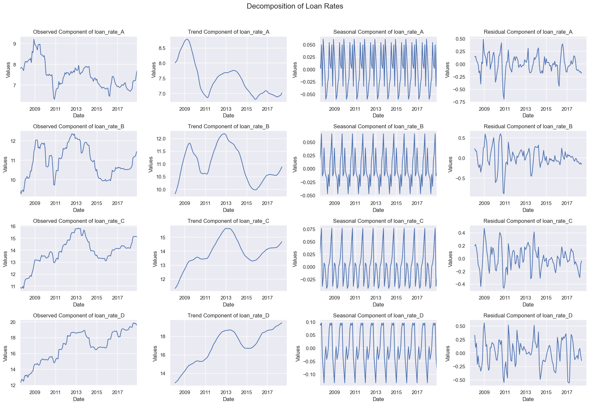
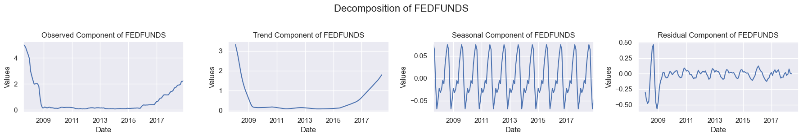
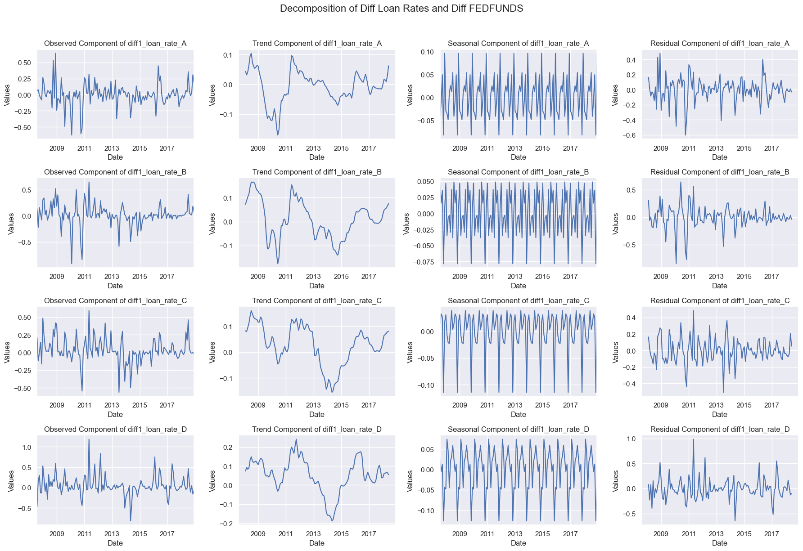
Create ACF plots.
all_variables = [df['loan_rate_A'], df['loan_rate_B'], df['loan_rate_C'], df['loan_rate_D'], df['FEDFUNDS'],
df['diff1_loan_rate_A'], df['diff1_loan_rate_B'], df['diff1_loan_rate_C'], df['diff1_loan_rate_D'],
df['diff1_FEDFUNDS'], df['diff2_FEDFUNDS']]
# Create a figure with subplots
fig, ax = plt.subplots(11, 1, figsize=(15, 4*11))
# Plot ACF for each variable
for i, variable in enumerate(all_variables):
plot_acf(variable, ax=ax[i], lags=40)
ax[i].set_title("ACF Plot for {}".format(variable.name))
# Adjust the layout of the subplots
plt.tight_layout()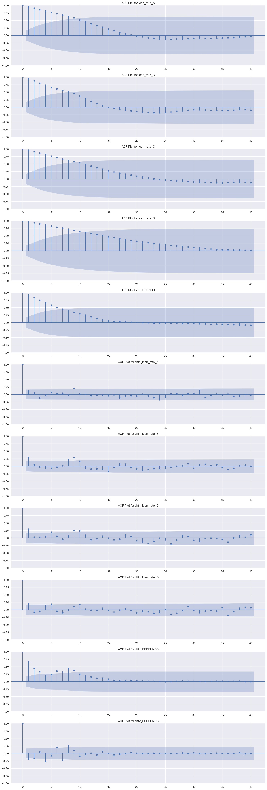
Step 3: Residuals Analysis
# Define a function to perform residual analysis
def residual_analysis(residuals, variable_name):
residuals = residuals.dropna() # drop NaN values
fig, ax = plt.subplots(2, 2, figsize=(15, 10))
ax = ax.flatten()
# QQ plot
qqplot(residuals, line='s', ax=ax[0])
ax[0].set_title(f'QQ Plot of Residuals ({variable_name})')
# Histogram with KDE
sns.distplot(residuals, ax=ax[1])
ax[1].set_title(f'Histogram with KDE of Residuals ({variable_name})')
# Residual series dot plot
sns.lineplot(data=residuals, linewidth=0.5, color='red', ax=ax[2])
ax[2].set_title(f'Residual Series Dot Plot ({variable_name})')
# ACF plot
plot_acf(residuals, ax=ax[3], lags=100)
ax[3].set_title(f'ACF Plot of Residuals ({variable_name})')
plt.tight_layout()
plt.show()
# Perform residual analysis for each variable
for variable_name in loan_rate_decompositions.keys():
residual_analysis(loan_rate_decompositions[variable_name].resid, variable_name)
# Perform residual analysis for FEDFUNDS
residual_analysis(fed_funds_decomposition.resid, "FEDFUNDS")
# Perform residual analysis for each difference variable
for variable_name in diff_loan_rate_decompositions.keys():
residual_analysis(diff_loan_rate_decompositions[variable_name].resid, variable_name)/Users/andres/Library/Caches/pypoetry/virtualenvs/validmind-Jp3s24zK-py3.8/lib/python3.8/site-packages/seaborn/distributions.py:2619: FutureWarning: `distplot` is a deprecated function and will be removed in a future version. Please adapt your code to use either `displot` (a figure-level function with similar flexibility) or `histplot` (an axes-level function for histograms).
warnings.warn(msg, FutureWarning)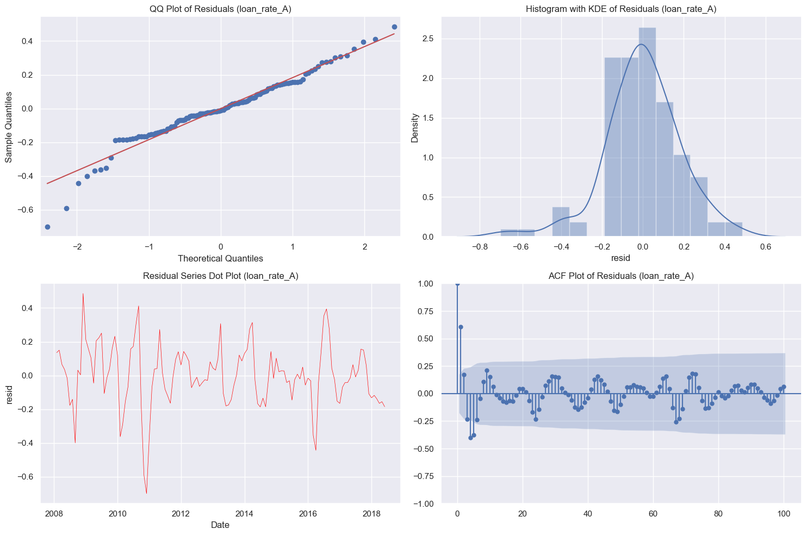
/Users/andres/Library/Caches/pypoetry/virtualenvs/validmind-Jp3s24zK-py3.8/lib/python3.8/site-packages/seaborn/distributions.py:2619: FutureWarning: `distplot` is a deprecated function and will be removed in a future version. Please adapt your code to use either `displot` (a figure-level function with similar flexibility) or `histplot` (an axes-level function for histograms).
warnings.warn(msg, FutureWarning)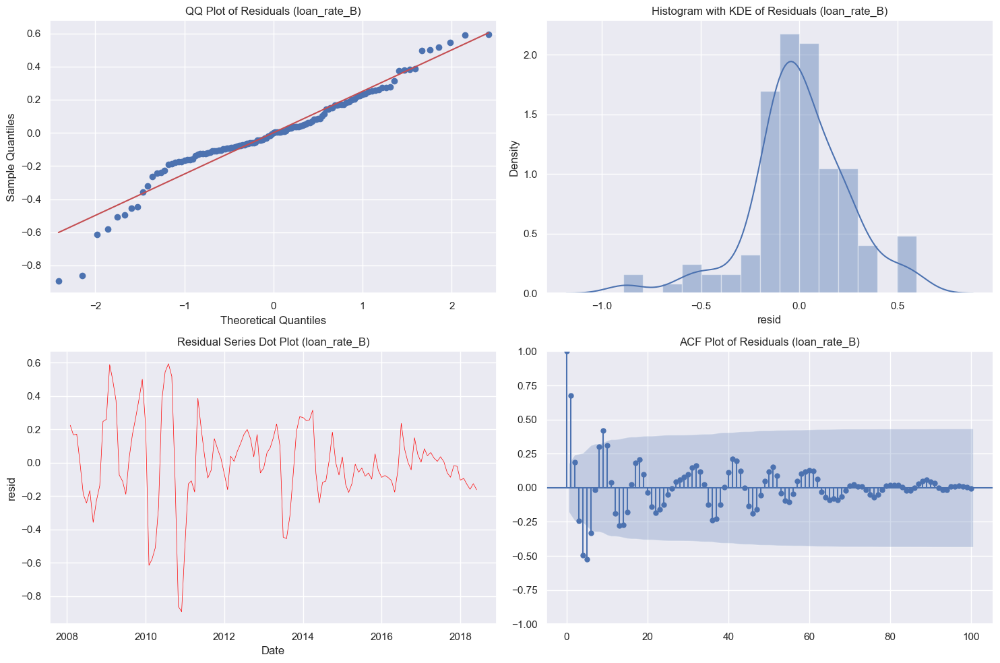
/Users/andres/Library/Caches/pypoetry/virtualenvs/validmind-Jp3s24zK-py3.8/lib/python3.8/site-packages/seaborn/distributions.py:2619: FutureWarning: `distplot` is a deprecated function and will be removed in a future version. Please adapt your code to use either `displot` (a figure-level function with similar flexibility) or `histplot` (an axes-level function for histograms).
warnings.warn(msg, FutureWarning)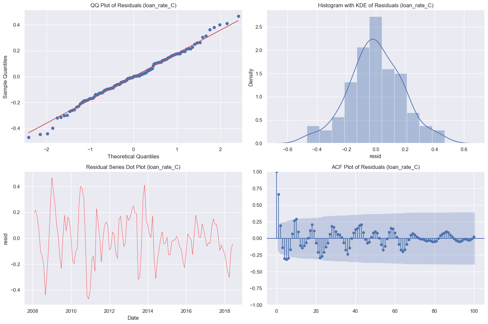
/Users/andres/Library/Caches/pypoetry/virtualenvs/validmind-Jp3s24zK-py3.8/lib/python3.8/site-packages/seaborn/distributions.py:2619: FutureWarning: `distplot` is a deprecated function and will be removed in a future version. Please adapt your code to use either `displot` (a figure-level function with similar flexibility) or `histplot` (an axes-level function for histograms).
warnings.warn(msg, FutureWarning)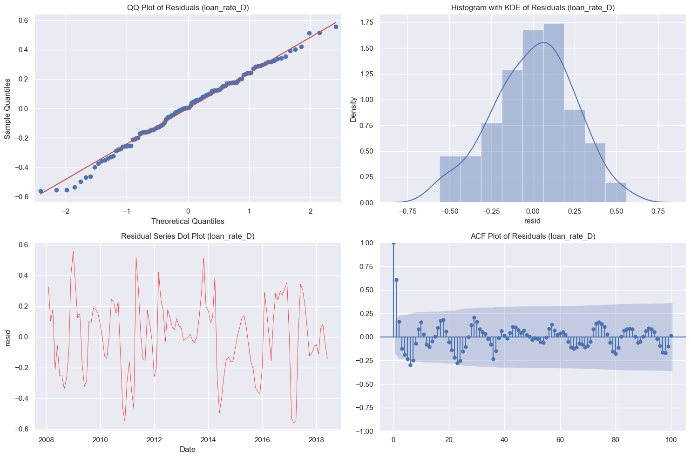
/Users/andres/Library/Caches/pypoetry/virtualenvs/validmind-Jp3s24zK-py3.8/lib/python3.8/site-packages/seaborn/distributions.py:2619: FutureWarning: `distplot` is a deprecated function and will be removed in a future version. Please adapt your code to use either `displot` (a figure-level function with similar flexibility) or `histplot` (an axes-level function for histograms).
warnings.warn(msg, FutureWarning)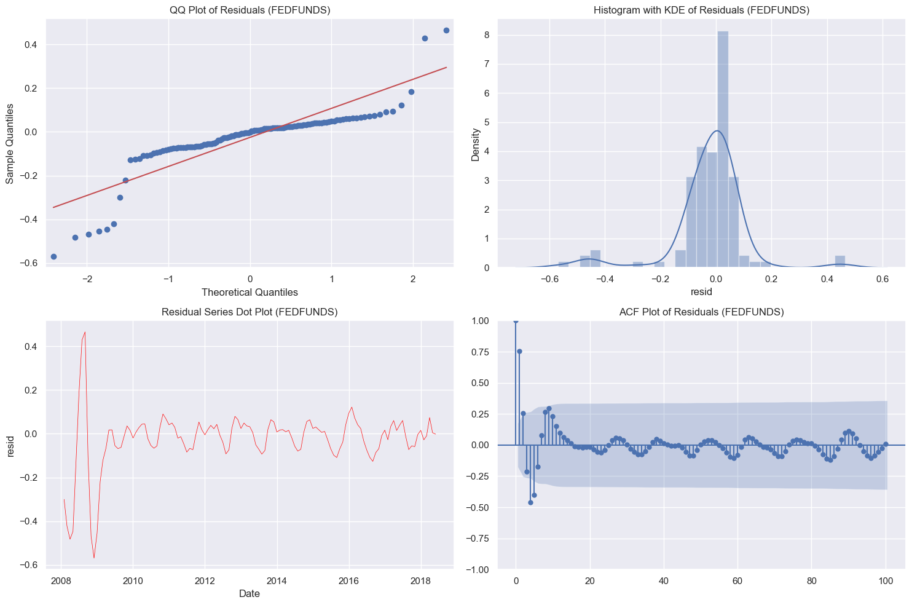
/Users/andres/Library/Caches/pypoetry/virtualenvs/validmind-Jp3s24zK-py3.8/lib/python3.8/site-packages/seaborn/distributions.py:2619: FutureWarning: `distplot` is a deprecated function and will be removed in a future version. Please adapt your code to use either `displot` (a figure-level function with similar flexibility) or `histplot` (an axes-level function for histograms).
warnings.warn(msg, FutureWarning)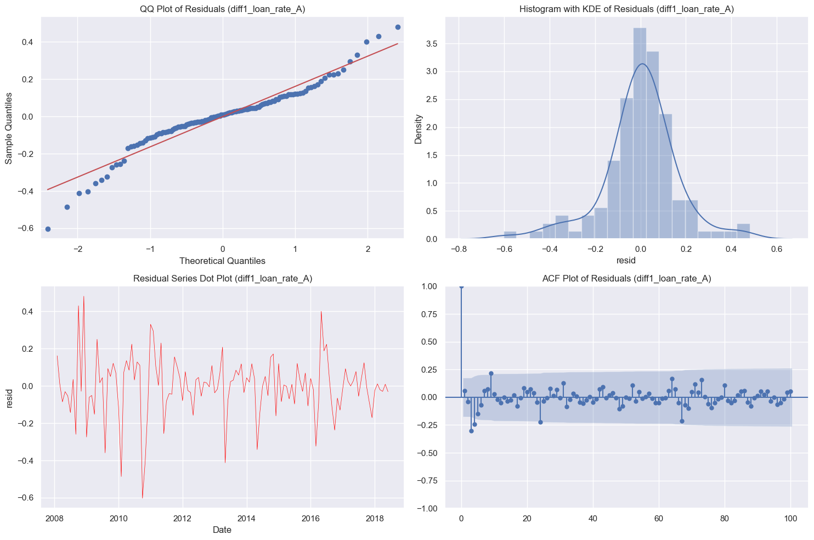
/Users/andres/Library/Caches/pypoetry/virtualenvs/validmind-Jp3s24zK-py3.8/lib/python3.8/site-packages/seaborn/distributions.py:2619: FutureWarning: `distplot` is a deprecated function and will be removed in a future version. Please adapt your code to use either `displot` (a figure-level function with similar flexibility) or `histplot` (an axes-level function for histograms).
warnings.warn(msg, FutureWarning)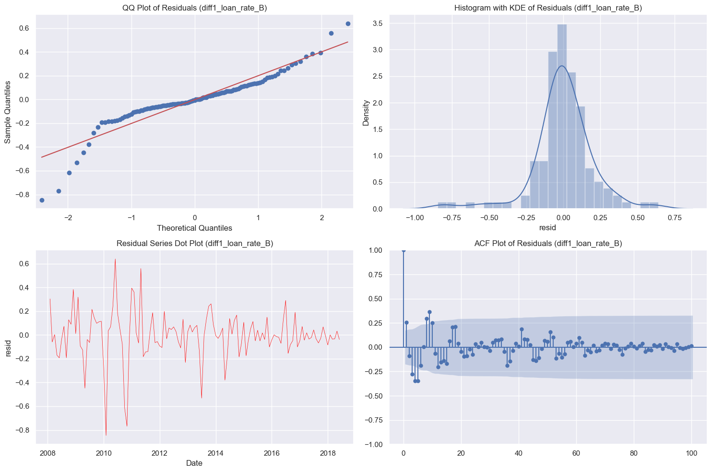
/Users/andres/Library/Caches/pypoetry/virtualenvs/validmind-Jp3s24zK-py3.8/lib/python3.8/site-packages/seaborn/distributions.py:2619: FutureWarning: `distplot` is a deprecated function and will be removed in a future version. Please adapt your code to use either `displot` (a figure-level function with similar flexibility) or `histplot` (an axes-level function for histograms).
warnings.warn(msg, FutureWarning)/Users/andres/Library/Caches/pypoetry/virtualenvs/validmind-Jp3s24zK-py3.8/lib/python3.8/site-packages/seaborn/distributions.py:2619: FutureWarning: `distplot` is a deprecated function and will be removed in a future version. Please adapt your code to use either `displot` (a figure-level function with similar flexibility) or `histplot` (an axes-level function for histograms).
warnings.warn(msg, FutureWarning)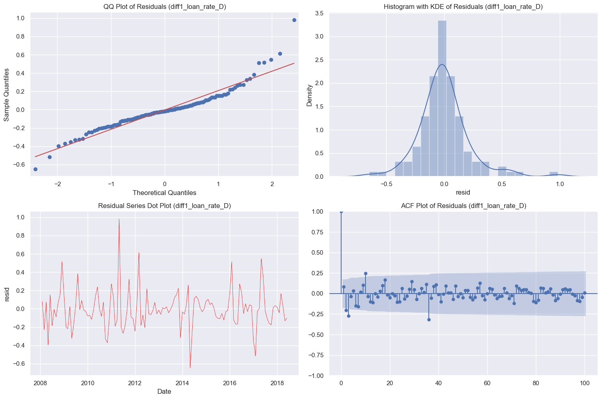
Test if Residuals are Normaly Distributed.
# Remove Nan values before computing any test statistics.
for col in loan_rates.columns:
loan_rate_decompositions[col].trend.dropna(inplace=True)
loan_rate_decompositions[col].seasonal.dropna(inplace=True)
loan_rate_decompositions[col].resid.dropna(inplace=True)
fed_funds_decomposition.trend.dropna(inplace=True)
fed_funds_decomposition.seasonal.dropna(inplace=True)
fed_funds_decomposition.resid.dropna(inplace=True)
for col in diff_loan_rates.columns:
diff_loan_rate_decompositions[col].trend.dropna(inplace=True)
diff_loan_rate_decompositions[col].seasonal.dropna(inplace=True)
diff_loan_rate_decompositions[col].resid.dropna(inplace=True)def compute_normality_statistics(data):
ks_stat, ks_p = stats.kstest(data, 'norm')
sw_stat, sw_p = stats.shapiro(data)
lf_stat, lf_p = lilliefors(data)
jb_stat, jb_p = stats.jarque_bera(data)
return pd.DataFrame(
{
"Test": [
"Kolmogorov-Smirnov",
"Shapiro-Wilk",
"Lilliefors",
"Jarque-Bera",
],
"Statistic": [ks_stat, sw_stat, lf_stat, jb_stat],
"P-value": [ks_p, sw_p, lf_p, jb_p],
}
)
# Initialize an empty DataFrame to store the results
normality_statistics_results = pd.DataFrame()
# Compute normality statistics for each variable
for variable_name in loan_rate_decompositions.keys():
data = loan_rate_decompositions[variable_name].resid
normality_stats = compute_normality_statistics(data)
normality_stats["Variable"] = variable_name
normality_statistics_results = normality_statistics_results.append(normality_stats, ignore_index=True)
# Compute normality statistics for FEDFUNDS
data = fed_funds_decomposition.resid
normality_stats = compute_normality_statistics(data)
normality_stats["Variable"] = "FEDFUNDS"
normality_statistics_results = normality_statistics_results.append(normality_stats, ignore_index=True)
# Compute normality statistics for each difference variable
for variable_name in diff_loan_rate_decompositions.keys():
data = diff_loan_rate_decompositions[variable_name].resid
normality_stats = compute_normality_statistics(data)
normality_stats["Variable"] = variable_name
normality_statistics_results = normality_statistics_results.append(normality_stats, ignore_index=True)def test_normality_statistics(normality_statistics_results, p_value_threshold=0.05):
# Add a Pass/Fail column based on the p-value threshold
normality_statistics_results['Pass/Fail'] = normality_statistics_results['P-value'].apply(lambda p: 'Pass' if p >= p_value_threshold else 'Fail')
# Display the results as a table
display(normality_statistics_results)
test_normality_statistics(normality_statistics_results, p_value_threshold=0.05)| Test | Statistic | P-value | Variable | Pass/Fail | |
|---|---|---|---|---|---|
| 0 | Kolmogorov-Smirnov | 0.361205 | 4.090343e-15 | loan_rate_A | Fail |
| 1 | Shapiro-Wilk | 0.964680 | 2.367732e-03 | loan_rate_A | Fail |
| 2 | Lilliefors | 0.090317 | 2.188144e-02 | loan_rate_A | Fail |
| 3 | Jarque-Bera | 22.683894 | 1.186465e-05 | loan_rate_A | Fail |
| 4 | Kolmogorov-Smirnov | 0.316534 | 1.237558e-11 | loan_rate_B | Fail |
| 5 | Shapiro-Wilk | 0.950467 | 1.692832e-04 | loan_rate_B | Fail |
| 6 | Lilliefors | 0.112750 | 1.031154e-03 | loan_rate_B | Fail |
| 7 | Jarque-Bera | 24.607237 | 4.535305e-06 | loan_rate_B | Fail |
| 8 | Kolmogorov-Smirnov | 0.343031 | 1.229136e-13 | loan_rate_C | Fail |
| 9 | Shapiro-Wilk | 0.992633 | 7.564428e-01 | loan_rate_C | Pass |
| 10 | Lilliefors | 0.047168 | 7.618809e-01 | loan_rate_C | Pass |
| 11 | Jarque-Bera | 0.206857 | 9.017404e-01 | loan_rate_C | Pass |
| 12 | Kolmogorov-Smirnov | 0.312985 | 2.225322e-11 | loan_rate_D | Fail |
| 13 | Shapiro-Wilk | 0.989167 | 4.321428e-01 | loan_rate_D | Pass |
| 14 | Lilliefors | 0.045615 | 8.004312e-01 | loan_rate_D | Pass |
| 15 | Jarque-Bera | 1.373671 | 5.031658e-01 | loan_rate_D | Pass |
| 16 | Kolmogorov-Smirnov | 0.430685 | 1.396740e-21 | FEDFUNDS | Fail |
| 17 | Shapiro-Wilk | 0.759088 | 4.823187e-13 | FEDFUNDS | Fail |
| 18 | Lilliefors | 0.191270 | 1.000000e-03 | FEDFUNDS | Fail |
| 19 | Jarque-Bera | 255.448548 | 3.388852e-56 | FEDFUNDS | Fail |
| 20 | Kolmogorov-Smirnov | 0.361380 | 3.954988e-15 | diff1_loan_rate_A | Fail |
| 21 | Shapiro-Wilk | 0.943480 | 5.220129e-05 | diff1_loan_rate_A | Fail |
| 22 | Lilliefors | 0.106437 | 2.682603e-03 | diff1_loan_rate_A | Fail |
| 23 | Jarque-Bera | 32.392802 | 9.246818e-08 | diff1_loan_rate_A | Fail |
| 24 | Kolmogorov-Smirnov | 0.359857 | 5.300637e-15 | diff1_loan_rate_B | Fail |
| 25 | Shapiro-Wilk | 0.893433 | 5.663049e-08 | diff1_loan_rate_B | Fail |
| 26 | Lilliefors | 0.137282 | 1.000000e-03 | diff1_loan_rate_B | Fail |
| 27 | Jarque-Bera | 122.026511 | 3.178922e-27 | diff1_loan_rate_B | Fail |
| 28 | Kolmogorov-Smirnov | 0.376455 | 2.017554e-16 | diff1_loan_rate_C | Fail |
| 29 | Shapiro-Wilk | 0.970360 | 7.531957e-03 | diff1_loan_rate_C | Fail |
| 30 | Lilliefors | 0.086871 | 3.264423e-02 | diff1_loan_rate_C | Fail |
| 31 | Jarque-Bera | 12.705219 | 1.742195e-03 | diff1_loan_rate_C | Fail |
| 32 | Kolmogorov-Smirnov | 0.331651 | 9.369166e-13 | diff1_loan_rate_D | Fail |
| 33 | Shapiro-Wilk | 0.926674 | 4.010225e-06 | diff1_loan_rate_D | Fail |
| 34 | Lilliefors | 0.110326 | 1.665161e-03 | diff1_loan_rate_D | Fail |
| 35 | Jarque-Bera | 104.263860 | 2.287655e-23 | diff1_loan_rate_D | Fail |
Test if Residuals are Autocorrelated.
def compute_autocorrelation_statistics(data, lags=10):
lb_results = acorr_ljungbox(data, lags=lags, return_df=True)
lb_stat = lb_results['lb_stat'].iloc[-1]
lb_p_value = lb_results['lb_pvalue'].iloc[-1]
bp_results = acorr_ljungbox(data, lags=lags, boxpierce=True, return_df=True)
bp_stat = bp_results['lb_stat'].iloc[-1]
bp_p_value = bp_results['lb_pvalue'].iloc[-1]
runs_stat, runs_p_value = runstest_1samp(data)
return pd.DataFrame(
{
"Test": [ "Ljung-Box", "Runs Test", "Box-Pierce Test", ],
"Statistic": [ lb_stat, runs_stat, bp_stat, ],
"P-value": [ lb_p_value, runs_p_value, bp_p_value, ],
}
)
# Initialize an empty DataFrame to store the results
autocorrelation_statistics_results = pd.DataFrame()
# Compute autocorrelation statistics for each variable
for variable_name in loan_rate_decompositions.keys():
data = loan_rate_decompositions[variable_name].resid.dropna()
autocorrelation_stats = compute_autocorrelation_statistics(data)
autocorrelation_stats["Variable"] = variable_name
autocorrelation_statistics_results = autocorrelation_statistics_results.append(autocorrelation_stats, ignore_index=True)
# Compute autocorrelation statistics for FEDFUNDS
data = fed_funds_decomposition.resid.dropna()
autocorrelation_stats = compute_autocorrelation_statistics(data)
autocorrelation_stats["Variable"] = "FEDFUNDS"
autocorrelation_statistics_results = autocorrelation_statistics_results.append(autocorrelation_stats, ignore_index=True)
# Compute autocorrelation statistics for each difference variable
for variable_name in diff_loan_rate_decompositions.keys():
data = diff_loan_rate_decompositions[variable_name].resid.dropna()
autocorrelation_stats = compute_autocorrelation_statistics(data)
autocorrelation_stats["Variable"] = variable_name
autocorrelation_statistics_results = autocorrelation_statistics_results.append(autocorrelation_stats, ignore_index=True)
autocorrelation_statistics_results = autocorrelation_statistics_results.reset_index(drop=True)
def test_autocorrelation_statistics(autocorrelation_statistics_results, p_value_threshold=0.05):
autocorrelation_statistics_results['Threshold'] = p_value_threshold
autocorrelation_statistics_results['P-value'] = pd.to_numeric(autocorrelation_statistics_results['P-value'], errors='coerce')
autocorrelation_statistics_results['Pass/Fail'] = autocorrelation_statistics_results['P-value'].apply(
lambda p: 'Pass' if p >= p_value_threshold else 'Fail'
)
display(autocorrelation_statistics_results)
test_autocorrelation_statistics(autocorrelation_statistics_results, p_value_threshold=0.01)| Test | Statistic | P-value | Variable | Threshold | Pass/Fail | |
|---|---|---|---|---|---|---|
| 0 | Ljung-Box | 116.663720 | 2.401553e-20 | loan_rate_A | 0.01 | Fail |
| 1 | Runs Test | -5.648902 | 1.614762e-08 | loan_rate_A | 0.01 | Fail |
| 2 | Box-Pierce Test | 116.663720 | 2.401553e-20 | loan_rate_A | 0.01 | Fail |
| 3 | Ljung-Box | 204.098406 | 2.253253e-38 | loan_rate_B | 0.01 | Fail |
| 4 | Runs Test | -6.375888 | 1.819052e-10 | loan_rate_B | 0.01 | Fail |
| 5 | Box-Pierce Test | 204.098406 | 2.253253e-38 | loan_rate_B | 0.01 | Fail |
| 6 | Ljung-Box | 125.601717 | 3.678593e-22 | loan_rate_C | 0.01 | Fail |
| 7 | Runs Test | -5.657398 | 1.536855e-08 | loan_rate_C | 0.01 | Fail |
| 8 | Box-Pierce Test | 125.601717 | 3.678593e-22 | loan_rate_C | 0.01 | Fail |
| 9 | Ljung-Box | 89.525260 | 6.651950e-15 | loan_rate_D | 0.01 | Fail |
| 10 | Runs Test | -6.008704 | 1.870119e-09 | loan_rate_D | 0.01 | Fail |
| 11 | Box-Pierce Test | 89.525260 | 6.651950e-15 | loan_rate_D | 0.01 | Fail |
| 12 | Ljung-Box | 169.890971 | 2.922023e-31 | FEDFUNDS | 0.01 | Fail |
| 13 | Runs Test | -6.518261 | 7.112729e-11 | FEDFUNDS | 0.01 | Fail |
| 14 | Box-Pierce Test | 169.890971 | 2.922023e-31 | FEDFUNDS | 0.01 | Fail |
| 15 | Ljung-Box | 31.658078 | 4.564856e-04 | diff1_loan_rate_A | 0.01 | Fail |
| 16 | Runs Test | -0.934551 | 3.500195e-01 | diff1_loan_rate_A | 0.01 | Pass |
| 17 | Box-Pierce Test | 31.658078 | 4.564856e-04 | diff1_loan_rate_A | 0.01 | Fail |
| 18 | Ljung-Box | 94.434755 | 7.038946e-16 | diff1_loan_rate_B | 0.01 | Fail |
| 19 | Runs Test | -0.627961 | 5.300294e-01 | diff1_loan_rate_B | 0.01 | Pass |
| 20 | Box-Pierce Test | 94.434755 | 7.038946e-16 | diff1_loan_rate_B | 0.01 | Fail |
| 21 | Ljung-Box | 54.151940 | 4.546097e-08 | diff1_loan_rate_C | 0.01 | Fail |
| 22 | Runs Test | -3.261335 | 1.108888e-03 | diff1_loan_rate_C | 0.01 | Fail |
| 23 | Box-Pierce Test | 54.151940 | 4.546097e-08 | diff1_loan_rate_C | 0.01 | Fail |
| 24 | Ljung-Box | 32.703162 | 3.054971e-04 | diff1_loan_rate_D | 0.01 | Fail |
| 25 | Runs Test | -1.632116 | 1.026551e-01 | diff1_loan_rate_D | 0.01 | Pass |
| 26 | Box-Pierce Test | 32.703162 | 3.054971e-04 | diff1_loan_rate_D | 0.01 | Fail |
Step 3: Test for seasonality using the Augmented Dickey-Fuller (ADF) test
Step 4: Analyze the seasonality test results
Step 5: Interpret the results
Based on the p-values from the ADF test, you can infer whether the time series are stationary or not. If the p-value is less than 0.05 (or your chosen significance level), you can reject the null hypothesis and conclude that the series is stationary. Otherwise, you fail to reject the null hypothesis and cannot conclude that the series is stationary.
Step 6: Handle seasonality
4.2. Methodology Selection and Development
4.2.4 Variable Analysis
## A. Feature Analysis
A.1. Univariate Analysis
Visual Inspection
A.2 Multivariave Analysis
Visual Inspection
B. Variable Selection
B.1 Selection Process
ARIMA Analysis
Step 1: Stationarity Analysis
The first step in any time series analysis is to visualize the data and check for stationarity. Stationarity is important because most time series models, including ARIMA, assume that the underlying data is stationary.
Unit Root Tests.
def compute_unit_root_statistics(df):
def apply_tests(series):
# ADF Test
adf_result = adfuller(series)
adf_test_stat = adf_result[0]
adf_p_value = adf_result[1]
# KPSS Test
kpss_result = kpss(series, nlags='auto')
kpss_test_stat = kpss_result[0]
kpss_p_value = kpss_result[1]
# PP Test
pp = PhillipsPerron(series)
pp_test_stat = pp.stat
pp_p_value = pp.pvalue
# Zivot-Andrews Test
za = ZivotAndrews(series)
za_test_stat = za.stat
za_p_value = za.pvalue
return pd.Series({
'ADF': adf_test_stat, 'ADF p-value': adf_p_value,
'KPSS': kpss_test_stat, 'KPSS p-value': kpss_p_value,
'PP': pp_test_stat, 'PP p-value': pp_p_value,
'ZA': za_test_stat, 'ZA p-value': za_p_value,
})
return df.apply(apply_tests)
unit_root_statistics = compute_unit_root_statistics(df)/Users/andres/Library/Caches/pypoetry/virtualenvs/validmind-Jp3s24zK-py3.8/lib/python3.8/site-packages/statsmodels/tsa/stattools.py:2018: InterpolationWarning: The test statistic is outside of the range of p-values available in the
look-up table. The actual p-value is smaller than the p-value returned.
warnings.warn(
/Users/andres/Library/Caches/pypoetry/virtualenvs/validmind-Jp3s24zK-py3.8/lib/python3.8/site-packages/statsmodels/tsa/stattools.py:2022: InterpolationWarning: The test statistic is outside of the range of p-values available in the
look-up table. The actual p-value is greater than the p-value returned.
warnings.warn(
/Users/andres/Library/Caches/pypoetry/virtualenvs/validmind-Jp3s24zK-py3.8/lib/python3.8/site-packages/statsmodels/tsa/stattools.py:2018: InterpolationWarning: The test statistic is outside of the range of p-values available in the
look-up table. The actual p-value is smaller than the p-value returned.
warnings.warn(
/Users/andres/Library/Caches/pypoetry/virtualenvs/validmind-Jp3s24zK-py3.8/lib/python3.8/site-packages/statsmodels/tsa/stattools.py:2018: InterpolationWarning: The test statistic is outside of the range of p-values available in the
look-up table. The actual p-value is smaller than the p-value returned.
warnings.warn(
/Users/andres/Library/Caches/pypoetry/virtualenvs/validmind-Jp3s24zK-py3.8/lib/python3.8/site-packages/statsmodels/tsa/stattools.py:2022: InterpolationWarning: The test statistic is outside of the range of p-values available in the
look-up table. The actual p-value is greater than the p-value returned.
warnings.warn(
/Users/andres/Library/Caches/pypoetry/virtualenvs/validmind-Jp3s24zK-py3.8/lib/python3.8/site-packages/statsmodels/tsa/stattools.py:2022: InterpolationWarning: The test statistic is outside of the range of p-values available in the
look-up table. The actual p-value is greater than the p-value returned.
warnings.warn(
/Users/andres/Library/Caches/pypoetry/virtualenvs/validmind-Jp3s24zK-py3.8/lib/python3.8/site-packages/statsmodels/tsa/stattools.py:2022: InterpolationWarning: The test statistic is outside of the range of p-values available in the
look-up table. The actual p-value is greater than the p-value returned.
warnings.warn(
/Users/andres/Library/Caches/pypoetry/virtualenvs/validmind-Jp3s24zK-py3.8/lib/python3.8/site-packages/statsmodels/tsa/stattools.py:2022: InterpolationWarning: The test statistic is outside of the range of p-values available in the
look-up table. The actual p-value is greater than the p-value returned.
warnings.warn(
/Users/andres/Library/Caches/pypoetry/virtualenvs/validmind-Jp3s24zK-py3.8/lib/python3.8/site-packages/statsmodels/tsa/stattools.py:2018: InterpolationWarning: The test statistic is outside of the range of p-values available in the
look-up table. The actual p-value is smaller than the p-value returned.
warnings.warn(
/Users/andres/Library/Caches/pypoetry/virtualenvs/validmind-Jp3s24zK-py3.8/lib/python3.8/site-packages/statsmodels/tsa/stattools.py:2022: InterpolationWarning: The test statistic is outside of the range of p-values available in the
look-up table. The actual p-value is greater than the p-value returned.
warnings.warn(unit_root_statistics| loan_rate_A | loan_rate_B | loan_rate_C | loan_rate_D | FEDFUNDS | diff1_loan_rate_A | diff1_loan_rate_B | diff1_loan_rate_C | diff1_loan_rate_D | diff1_FEDFUNDS | diff2_FEDFUNDS | |
|---|---|---|---|---|---|---|---|---|---|---|---|
| ADF | -1.917289 | -3.159930 | -2.530667 | -1.617159 | -0.168543 | -1.031383e+01 | -8.632056e+00 | -8.618071e+00 | -4.103447e+00 | -3.632288 | -3.327780 |
| ADF p-value | 0.323972 | 0.022424 | 0.108190 | 0.474219 | 0.942169 | 3.134761e-18 | 5.720336e-14 | 6.211940e-14 | 9.558947e-04 | 0.005173 | 0.013681 |
| KPSS | 1.012357 | 0.263073 | 0.809961 | 1.564146 | 0.375746 | 8.592937e-02 | 1.514857e-01 | 3.335876e-01 | 1.887051e-01 | 1.153749 | 0.061353 |
| KPSS p-value | 0.010000 | 0.100000 | 0.010000 | 0.010000 | 0.087609 | 1.000000e-01 | 1.000000e-01 | 1.000000e-01 | 1.000000e-01 | 0.010000 | 0.100000 |
| PP | -2.027462 | -2.446084 | -2.264992 | -1.853613 | -3.970772 | -1.034179e+01 | -8.657786e+00 | -9.063228e+00 | -9.725544e+00 | -5.639326 | -21.677880 |
| PP p-value | 0.274663 | 0.129150 | 0.183507 | 0.354187 | 0.001572 | 2.673442e-18 | 4.915171e-14 | 4.504048e-15 | 9.295675e-17 | 0.000001 | 0.000000 |
| ZA | -3.498670 | -5.246346 | -4.681009 | -4.566136 | -4.263683 | -1.068546e+01 | -8.970778e+00 | -9.255829e+00 | -4.753945e+00 | -5.147877 | -5.228518 |
| ZA p-value | 0.680477 | 0.011857 | 0.074135 | 0.100013 | 0.208163 | 1.000000e-05 | 1.000000e-05 | 1.000000e-05 | 6.055853e-02 | 0.017935 | 0.012958 |
def test_unit_root_statistics(test_results, threshold=0.01):
formatted_results = []
for column in test_results.columns:
# for test_name in ['ADF', 'KPSS', 'PP', 'ZA', 'DFGLS']:
for test_name in ['ADF', 'KPSS', 'PP', 'ZA']:
test_stat = test_results.loc[test_name, column]
p_value = test_results.loc[f'{test_name} p-value', column]
pass_fail = 'Pass' if p_value > threshold else 'Fail'
formatted_results.append({
'Test': test_name,
'Statistic': test_stat,
'P-value': p_value,
'Variable': column,
'Threshold': threshold,
'Pass/Fail': pass_fail
})
return pd.DataFrame(formatted_results)
formatted_results = test_unit_root_statistics(unit_root_statistics)
display(formatted_results)| Test | Statistic | P-value | Variable | Threshold | Pass/Fail | |
|---|---|---|---|---|---|---|
| 0 | ADF | -1.917289 | 3.239719e-01 | loan_rate_A | 0.01 | Pass |
| 1 | KPSS | 1.012357 | 1.000000e-02 | loan_rate_A | 0.01 | Fail |
| 2 | PP | -2.027462 | 2.746634e-01 | loan_rate_A | 0.01 | Pass |
| 3 | ZA | -3.498670 | 6.804771e-01 | loan_rate_A | 0.01 | Pass |
| 4 | ADF | -3.159930 | 2.242441e-02 | loan_rate_B | 0.01 | Pass |
| 5 | KPSS | 0.263073 | 1.000000e-01 | loan_rate_B | 0.01 | Pass |
| 6 | PP | -2.446084 | 1.291496e-01 | loan_rate_B | 0.01 | Pass |
| 7 | ZA | -5.246346 | 1.185734e-02 | loan_rate_B | 0.01 | Pass |
| 8 | ADF | -2.530667 | 1.081899e-01 | loan_rate_C | 0.01 | Pass |
| 9 | KPSS | 0.809961 | 1.000000e-02 | loan_rate_C | 0.01 | Fail |
| 10 | PP | -2.264992 | 1.835073e-01 | loan_rate_C | 0.01 | Pass |
| 11 | ZA | -4.681009 | 7.413460e-02 | loan_rate_C | 0.01 | Pass |
| 12 | ADF | -1.617159 | 4.742193e-01 | loan_rate_D | 0.01 | Pass |
| 13 | KPSS | 1.564146 | 1.000000e-02 | loan_rate_D | 0.01 | Fail |
| 14 | PP | -1.853613 | 3.541874e-01 | loan_rate_D | 0.01 | Pass |
| 15 | ZA | -4.566136 | 1.000130e-01 | loan_rate_D | 0.01 | Pass |
| 16 | ADF | -0.168543 | 9.421688e-01 | FEDFUNDS | 0.01 | Pass |
| 17 | KPSS | 0.375746 | 8.760949e-02 | FEDFUNDS | 0.01 | Pass |
| 18 | PP | -3.970772 | 1.571534e-03 | FEDFUNDS | 0.01 | Fail |
| 19 | ZA | -4.263683 | 2.081630e-01 | FEDFUNDS | 0.01 | Pass |
| 20 | ADF | -10.313828 | 3.134761e-18 | diff1_loan_rate_A | 0.01 | Fail |
| 21 | KPSS | 0.085929 | 1.000000e-01 | diff1_loan_rate_A | 0.01 | Pass |
| 22 | PP | -10.341787 | 2.673442e-18 | diff1_loan_rate_A | 0.01 | Fail |
| 23 | ZA | -10.685459 | 1.000000e-05 | diff1_loan_rate_A | 0.01 | Fail |
| 24 | ADF | -8.632056 | 5.720336e-14 | diff1_loan_rate_B | 0.01 | Fail |
| 25 | KPSS | 0.151486 | 1.000000e-01 | diff1_loan_rate_B | 0.01 | Pass |
| 26 | PP | -8.657786 | 4.915171e-14 | diff1_loan_rate_B | 0.01 | Fail |
| 27 | ZA | -8.970778 | 1.000000e-05 | diff1_loan_rate_B | 0.01 | Fail |
| 28 | ADF | -8.618071 | 6.211940e-14 | diff1_loan_rate_C | 0.01 | Fail |
| 29 | KPSS | 0.333588 | 1.000000e-01 | diff1_loan_rate_C | 0.01 | Pass |
| 30 | PP | -9.063228 | 4.504048e-15 | diff1_loan_rate_C | 0.01 | Fail |
| 31 | ZA | -9.255829 | 1.000000e-05 | diff1_loan_rate_C | 0.01 | Fail |
| 32 | ADF | -4.103447 | 9.558947e-04 | diff1_loan_rate_D | 0.01 | Fail |
| 33 | KPSS | 0.188705 | 1.000000e-01 | diff1_loan_rate_D | 0.01 | Pass |
| 34 | PP | -9.725544 | 9.295675e-17 | diff1_loan_rate_D | 0.01 | Fail |
| 35 | ZA | -4.753945 | 6.055853e-02 | diff1_loan_rate_D | 0.01 | Pass |
| 36 | ADF | -3.632288 | 5.172913e-03 | diff1_FEDFUNDS | 0.01 | Fail |
| 37 | KPSS | 1.153749 | 1.000000e-02 | diff1_FEDFUNDS | 0.01 | Fail |
| 38 | PP | -5.639326 | 1.045285e-06 | diff1_FEDFUNDS | 0.01 | Fail |
| 39 | ZA | -5.147877 | 1.793470e-02 | diff1_FEDFUNDS | 0.01 | Pass |
| 40 | ADF | -3.327780 | 1.368147e-02 | diff2_FEDFUNDS | 0.01 | Pass |
| 41 | KPSS | 0.061353 | 1.000000e-01 | diff2_FEDFUNDS | 0.01 | Pass |
| 42 | PP | -21.677880 | 0.000000e+00 | diff2_FEDFUNDS | 0.01 | Fail |
| 43 | ZA | -5.228518 | 1.295767e-02 | diff2_FEDFUNDS | 0.01 | Pass |
Step 2: Identify the order of the AR model
The order of the autoregressive (AR) model can be determined by looking at the partial autocorrelation function (PACF) plot. The PACF shows the correlation between a time series and its lagged values after accounting for the correlation at all shorter lags.
def find_ar_order(column, max_lag):
pacf_values, pacf_confidence_intervals = pacf(column, nlags=max_lag, alpha=0.05, method="ywmle")
for lag, pacf_value, ci in zip(range(len(pacf_values)), pacf_values, pacf_confidence_intervals):
if pacf_value <= ci[1]:
return lag - 1
return None
max_lag = 10 # Maximum lag to consider
ar_orders = {}
for col in df.columns:
ar_order = find_ar_order(df[col], max_lag)
ar_orders[col] = ar_order
# Create a DataFrame from the ar_orders dictionary
ar_orders_df = pd.DataFrame.from_dict(ar_orders, orient='index', columns=['AR_order'])
ar_orders_df.reset_index(inplace=True)
ar_orders_df.columns = ['Column', 'AR_order']
# Display the DataFrame
display(ar_orders_df)| Column | AR_order | |
|---|---|---|
| 0 | loan_rate_A | -1 |
| 1 | loan_rate_B | -1 |
| 2 | loan_rate_C | -1 |
| 3 | loan_rate_D | -1 |
| 4 | FEDFUNDS | -1 |
| 5 | diff1_loan_rate_A | -1 |
| 6 | diff1_loan_rate_B | -1 |
| 7 | diff1_loan_rate_C | -1 |
| 8 | diff1_loan_rate_D | -1 |
| 9 | diff1_FEDFUNDS | -1 |
| 10 | diff2_FEDFUNDS | -1 |